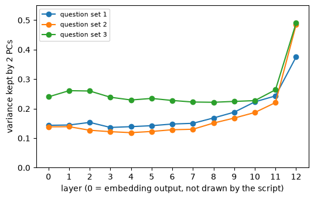
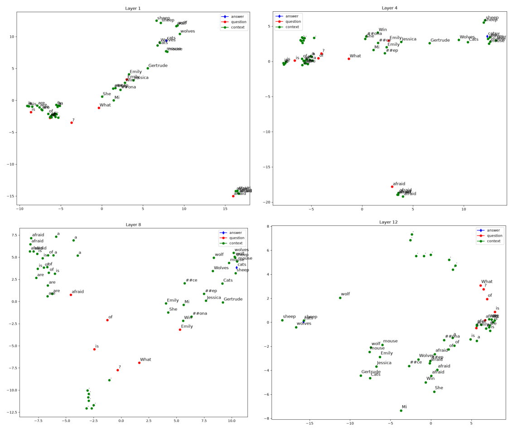
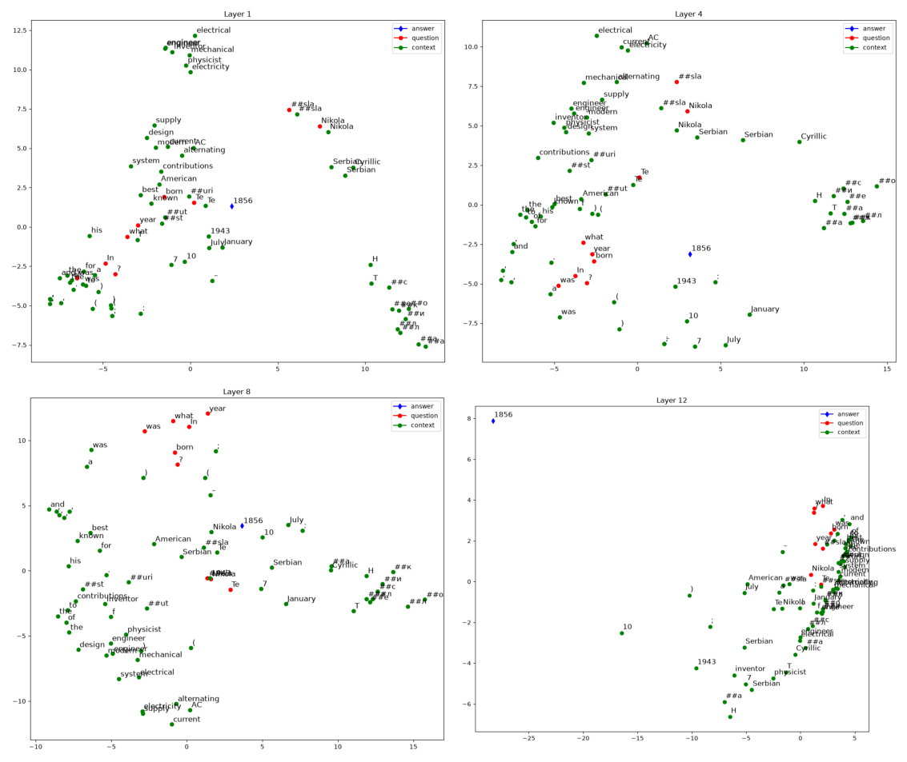
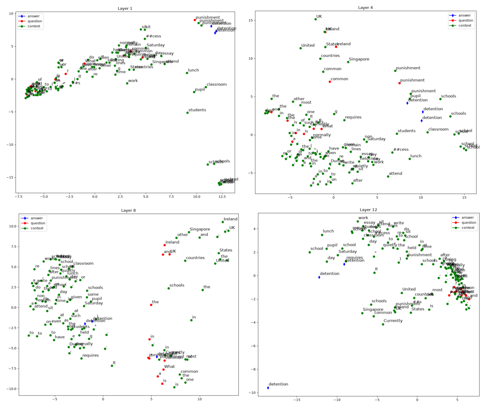

6.1 起點：Topic II 的三種方法
投影片第 12–15 頁是 Topic II 的開頭與前兩種方法。全部文字如下（用 PDF 文字擷取工具抽出，逐字照錄；第一行「T opic」中間的空格是抽字造成的，投影片上沒有）：
=== p.12
T opic II: BERT explanation
=== p.13
Task
● Run the sample code and finish 10 questions (all multiple choice form)
● We’ll cover 3 explanation approaches
○ Attention Visualization
○ Embedding Visualization
○ Embedding analysis
● You need to:
○ Know the basic idea of each method
○ Run the code and observe the results
○ For some cases, you may need to modify a small part of the code
=== p.14
Attention Visualization
Question 21 to 24
● Visualize attention mechanism of
bert using
https://exbert.net/exBERT.html
Alternative link:
https://huggingface.co/exbert/
Ref: https://arxiv.org/pdf/1910.05276.pdf
Tutorial: https://youtu.be/e31oyfo_thY
=== p.15
Embedding Visualization
Question 25 to 27
● Visualize embedding across
layers of BERT using PCA
(Principal Component Analysis)
● Fine-tuned for Question
Answering第 13 頁說 Topic II 有 10 題（Q21–30，全部是選擇題），分成三種方法：Attention Visualization（Q21–24，本章 6.2 節）、Embedding Visualization（Q25–27，本章其餘各節）、Embedding analysis（Q28–30，第 7 章）。第 14 頁的 Ref 是一篇論文的網址，Tutorial 是一部影片的網址，本書只照錄，沒有查證它們的內容。和 Topic I 一樣，題目本身在 Gradescope 上、不在 repo 裡（第 0 章 0.1 節〈30 題在問什麼〉），本書不知道 Q21–27 實際問什麼，所以不逐題作答。
程式這一邊，bert_hidden_states.py 開頭的 docstring 把兩種方法各寫了一段：
"""# Homework 9 - Explainable AI (Part 2 BERT)
## Attention Visualization (Q21~24)
Use https://exbert.net/exBERT.html directly in the browser.
## Embedding Visualization (Q25~27)
We have a pre-trained model which is fine-tuned for QA.
Solving QA requires 4 steps: (steps are NOT in order)
1. Clustering similar words together (based on relation of words in context)
2. Answer extraction
3. Clustering similar words together (based on meaning of words)
4. Matching questions with relevant information in context
Can you find out the functionalities of each layer just by looking into the embedding of hidden states?
The Colab notebook loads the TA's tokenizer and saved hidden states from hw9_bert.zip,
but that Google Drive file is gone (404). If hw9_bert/ exists it is still used;
otherwise the hidden states are computed with a public BERT fine-tuned on SQuAD,
so the figures will differ from the slides.
Figures are saved to output/bert_q{QUESTION}_layer{N}.png.
"""- 第 15 行：Q21–24 直接在瀏覽器裡用 exBERT，這支腳本沒有對應的程式。
- 第 19–25 行是 Q25–27 的題目核心：BERT 回答問題需要四個步驟（「順序不是照編號」），問你能不能只看 hidden states 的圖，就找出每一層的功能。6.10 節會回到這段，說明為什麼本 repo 的圖對這個問題沒有標準答案。
- 第 27–30 行是本 repo 加的說明：原作業的資料已經不在了，改用公開的模型，圖會和投影片不同。6.3 節細說。
腳本的主程式（第 125–138 行：有 hw9_bert/ 就照原版用，沒有就下載替代模型、三組問答各畫 12 張）、執行指令與 stdout、12.3 秒的執行時間，以及載入模型時 stderr 的 LOAD REPORT，第 0 章 0.5 節與 〈LOAD REPORT〉都講過了，本章不重複。第 0 章 0.6 節也實測過：這 36 張圖重跑一次逐位元相同。本章從第 75 行的 visualize 讀起。
6.2 Q21–24：exBERT 與 attention
attention 是什麼（直覺）
目錄頁和第 0 章用一句話介紹過 BERT：先把一段文字切成一個個 token（字或字的片段，6.3 節細說），每個 token 經過 12 層運算，每一層都為每個 token 輸出一個向量。這裡補上「每一層在做什麼」的直覺。
每一層的核心是 attention（注意力機制）：算某個 token 在這一層的新向量時，模型會看序列裡所有的 token，替每一個 token 打一個權重（全部加起來是 1），再依這些權重把它們的資訊混合進來。權重大的 token，就是這個 token 這一層「參考比較多」的對象。例如問句「What is Emily afraid of?」裡的 afraid，可能會比較參考 Emily 與 of；這只是說明用的假想例子，本書沒有量過任何一個 attention 權重。這個模型每一層有 12 組各自獨立的權重，稱為 12 個 attention head（6.3 節的模型規格），每個 head 可以學會參考不同的東西。attention 之後，每個 token 再各自經過一個小的兩層網路（768 維 → 3072 維 → 768 維），叫 feed-forward network（FFN，前饋網路）；這一層的輸出就是下一層的輸入。
所以「看 attention」就是看這些權重：第幾層、第幾個 head，哪個 token 參考了哪個 token、比重多少。這是 Q21–24 的主題；Q25–27 看的則是每一層的輸出向量本身（hidden states，6.6 節）。
exBERT 的現況（2026-10-04）
exBERT 是一個在瀏覽器裡看 Transformer 模型（BERT 屬於這一類）attention 的網站：輸入一句話，選一層、一個 head，它把每個 token 對其他 token 的權重畫成連線。投影片第 14 頁給了兩個網址。原版 notebook 的做法是把網站直接嵌進 notebook：
You are highly recommended to visualize on this website directly: https://exbert.net/exBERT.htmldisplay.IFrame("https://exbert.net/exBERT.html", width=1600, height=1600)（原版 notebook 的一段說明文字與一行程式；notebook 不在本 repo 裡。）本 repo 是腳本，沒有 notebook 可以嵌網頁，只在 docstring 第 15 行留了一句「直接在瀏覽器裡用」。本書 2026-10-04 實測兩個網址：
| 網址 | 結果 |
|---|---|
https://exbert.net/exBERT.html（投影片的主網址） | 15 秒逾時，連不上（和 2026-10-03 那次相同，目錄頁〈先說在前面〉） |
https://huggingface.co/exbert/（投影片的替代網址） | 轉址到 https://huggingface.co/spaces/exbert-project/exbert，HTTP 200 |
後者是 Hugging Face 上的一個 Space（放網頁小程式的地方，目錄頁介紹過）。目錄頁寫的是「網址存在，但那個 Space 現在能不能正常使用沒有檢查」；這次多查了兩件事：Hugging Face 的 API 回報這個 Space 的狀態是 RUNNING（最後修改日期 2023-05-12），它的網頁（https://exbert-project-exbert.hf.space/，會轉到 /client/exBERT.html）回 HTTP 200，傳回標題為 exBERT 的頁面。也就是說，頁面載得到；但選模型、輸入句子、看 attention 這些互動功能能不能用，本書沒有在瀏覽器裡試過。要做 Q21–24，請直接打開替代網址試試看。題目要你在網站上看哪個模型、哪句話、第幾層第幾個 head，本書不知道（題目不在 repo 裡），只能建議先用 6.2 節的直覺去讀那些連線：哪個 token 連到哪些 token、線有多粗。如果互動功能不能用，6.11 節的「現在的做法」框有一個不靠網站、自己取出 attention 權重的方向，但本書沒有附程式，也沒有跑過。
6.3 模型與 tokenizer：hw9_bert.zip 不在了
替代模型
原作業的 Q25–27 不在本機跑模型：助教把 tokenizer 與三組問答預先算好的 hidden states 放在 hw9_bert.zip，notebook 下載解壓後直接讀。這個檔案已經下架（2026-10-03 兩個下載網址都回 HTTP 404，目錄頁〈先說在前面〉的第二層），列在教學大綱〈讀 code 不盡信文件〉的第 7 項。助教用的是哪一個模型，無從得知。本 repo 改用的模型寫在檔案開頭：
output_dir = './output/'
hw9_bert_dir = './hw9_bert/'
qa_model_name = 'deepset/bert-base-cased-squad2'deepset/bert-base-cased-squad2 是 Hugging Face（公開分享模型的網站，目錄頁〈先說在前面〉）上的模型，用 Hugging Face 的 Python 套件 transformers 載入（第 9 行 import 的 BertForQuestionAnswering、BertTokenizerFast 都來自它）：標準尺寸的 BERT（BERT-base），在 SQuAD 2.0 問答資料集上微調過。名字裡的 cased 是「分大小寫」：Cats 和 cats 是不同的 token（6.4 節會用到這一點）。本書把它載入後印出的規格：
- 12 層，每個 token 的向量是 768 維，每層 12 個 attention head，attention 之後那個小網路的中間層是 3072 維，最長可以處理 512 個 token。
- 參數 107,721,218 個，大約是第 0 章 CNN（14,162,827）的 7.6 倍（手算）。
- 模型類別是
BertForQuestionAnswering：12 層的 BERT 本體，加上最後一個qa_outputs = Linear(768, 2)，為每個 token 算兩個分數：「答案從這裡開始」的分數與「答案在這裡結束」的分數（6.5 節）。第 0 章 LOAD REPORT 說的 pooler（把整段文字濃縮成一個代表向量的一層）用不到，就是因為答案是逐 token 找的。
tokenizer：WordPiece 與 ## 片段
tokenizer 是把文字切成 token、再換成編號（token id）的工具，和模型成對發布，必須用同一套切法，模型才看得懂。這個模型的 tokenizer 是 WordPiece：詞彙表裡有 28,996 個片段，常見的字整個是一個 token；詞彙表裡沒有的字，就拆成幾個片段，開頭以外的片段前面加 ##，表示「接在前一個片段後面，中間沒有空白」。第 1 組問答的 Tesla 被切成 Te、##sla；第 3 組的 Sheep 變成 She、##ep，Mice 變成 Mi、##ce，Winona 變成 Win、##ona。第 1 組文章裡的西里爾字母（塞爾維亞文的「Никола Тесла」）幾乎全部被拆成單一字母：Н、##и、##к……。
tokenizer 還會加上幾個特殊 token：
- [CLS]（id 101）：放在序列最前面。在問答模型裡，它還有一個用途：「這段文章裡沒有答案」時，模型會把起點和終點都指向它（6.5 節）。
- [SEP]（id 102）：分隔符。問題後面放一個，文章後面再放一個。
- 另外還有 [PAD]（id 0，補齊長度用）與 [UNK]（id 100，切不出來的字），本章的三組問答用不到。
同時送進一個問題和一段文章時，tokenizer 還會產生 token_type_ids：每個 token 一個 0 或 1，告訴模型它屬於第一段（問題，含 [CLS] 與第一個 [SEP]，是 0）還是第二段（文章，含最後的 [SEP]，是 1）。三組問答的 0 與 1 分別有 11／67、13／107、8／48 個。
程式在 visualize 的開頭做這件事：
def visualize(Tokenizer, model, QUESTION):
# Tokenize and encode question and paragraph into model's input format
inputs = Tokenizer(questions[QUESTION-1], contexts[QUESTION-1], return_tensors='pt')
# Get the [start, end] positions of [question, context] in encoded sequence for plotting
question_start, question_end = 1, inputs['input_ids'][0].tolist().index(102) - 1
context_start, context_end = question_end + 2, len(inputs['input_ids'][0]) - 2
if model is None:
outputs_hidden_states = torch.load(f"{hw9_bert_dir}output/model_q{QUESTION}")
else:
with torch.no_grad():
outputs_hidden_states = model(**inputs).hidden_states- 第 77 行把問題與文章一起編碼。
return_tensors='pt'要求回傳 PyTorch 張量；inputs是一個類似 dict 的物件，裡面有input_ids（token id，形狀(1, 序列長度)）、token_type_ids與attention_mask（標出哪些位置是真的 token、哪些是補齊的；這裡只有一個序列、沒有補齊，全部是 1）。QUESTION是 1、2、3，所以用QUESTION-1取 list 的第 0、1、2 個。 - 第 80 行：問題從位置 1 開始（位置 0 是 [CLS]）；
.index(102)找第一個 [SEP] 的位置，減 1 就是問題的最後一個 token。 - 第 81 行：文章從第一個 [SEP] 的下一格開始，到倒數第 2 格結束（最後一格是第二個 [SEP]）。
- 第 83–87 行：沒有模型（
model is None，也就是有hw9_bert/的原版情況）就讀預存的 hidden states；否則在torch.no_grad()裡跑一次 forward（第 1 章 1.6 節：只是不記錄梯度），取出.hidden_states。model(**inputs)的**把 dict 拆成關鍵字參數，等於model(input_ids=…, token_type_ids=…, attention_mask=…)。它有.hidden_states，是因為主程式第 134 行載入模型時寫的是BertForQuestionAnswering.from_pretrained(qa_model_name, output_hidden_states=True).eval()（第 0 章 0.5 節引用過整段主程式）。
以第 3 組問答為例，編出來的 56 個 token 如圖 6.1：
三組問答的範圍：第 1 組 78 個 token，問題 1..9、文章 11..76（[SEP] 在 10、77）；第 2 組 120 個，問題 1..11、文章 13..118；第 3 組 56 個，問題 1..6、文章 8..54。
6.4 三組問答與紅、綠、藍
三組問答寫在模組層的三個 list 裡。程式的註解寫 Question 1／2／3；本書照第 0 章 0.1 節的約定，稱為「第 1／2／3 組問答」，以免和作業題號 Q1–Q30 混淆：
contexts, questions, answers = [], [], []
# Question 1
contexts += ["Nikola Tesla (Serbian Cyrillic: Никола Тесла; 10 July 1856 – 7 January 1943) was a Serbian American inventor, electrical engineer, \
mechanical engineer, physicist, and futurist best known for his contributions to the design of the modern alternating current \
(AC) electricity supply system."]
questions += ["In what year was Nikola Tesla born?"]
answers += ["1856"]
# Question 2
contexts += ['Currently detention is one of the most common punishments in schools in the United States, the UK, Ireland, Singapore and other countries. \
It requires the pupil to remain in school at a given time in the school day (such as lunch, recess or after school); or even to attend \
school on a non-school day, e.g. "Saturday detention" held at some schools. During detention, students normally have to sit in a classroom \
and do work, write lines or a punishment essay, or sit quietly.']
questions += ['What is a common punishment in the UK and Ireland?']
answers += ['detention']
# Question 3
contexts += ['Wolves are afraid of cats. Sheep are afraid of wolves. Mice are afraid of sheep. Gertrude is a mouse. Jessica is a mouse. \
Emily is a wolf. Cats are afraid of sheep. Winona is a wolf.']
questions += ['What is Emily afraid of?']
answers += ['cats']這三組和原版 notebook 逐字相同。三組的性質不同：第 1 組（Tesla 哪一年出生）答案就寫在文章裡的日期中；第 2 組（英國與愛爾蘭常見的處罰）答案 detention 在文章裡出現三次；第 3 組（Emily 怕什麼）要推理兩步：Emily 是狼，狼怕貓，所以答案是 cats，文章裡沒有任何一句直接說 Emily 怕什麼。
文章字串很長，用行尾的 \ 接到下一行。續行開頭的 12 個空白會留在字串裡（例如第 1 組在 engineer, 之後多了一串空白），但 tokenizer 把連續空白當作一個分隔，切出來的 token 不受影響。
畫圖時每個 token 用什麼顏色，由下面這段決定：
##### Traverse hidden state of all layers #####
# "outputs_hidden_state" is a tuple with 13 elements, the 1st element is embedding output, the other 12 elements are attention hidden states of layer 1 - 12
for layer_index, embeddings in enumerate(outputs_hidden_states[1:]): # 1st element is skipped
# "embeddings" has shape [1, sequence_length, 768], where 768 is the dimension of BERT's hidden state
# Dimension of "embeddings" is reduced from 768 to 2 using PCA (Principal Component Analysis)
reduced_embeddings = PCA(n_components=2, random_state=0).fit_transform(embeddings[0])
fig = plt.figure(figsize=(12, 10))
##### Draw embedding of each token #####
for i, token_id in enumerate(inputs['input_ids'][0]):
x, y = reduced_embeddings[i] # Embedding has 2 dimensions, each corresponds to a point
word = Tokenizer.decode(token_id) # Decode token back to word
# Scatter points of answer, question and context in different colors
if word in answers[QUESTION-1].split(): # Check if word in answer
plt.scatter(x, y, color='blue', marker='d')
elif question_start <= i <= question_end:
plt.scatter(x, y, color='red')
elif context_start <= i <= context_end:
plt.scatter(x, y, color='green')
else: # skip special tokens [CLS], [SEP]
continue
plt.text(x + 0.1, y + 0.2, word, fontsize=12) # Plot word next to its point
# Plot "empty" points to show labels
plt.plot([], label='answer', color='blue', marker='d')
plt.plot([], label='question', color='red', marker='o')
plt.plot([], label='context', color='green', marker='o')
plt.legend(loc='best') # Display the area describing the elements in the plot
plt.title('Layer ' + str(layer_index + 1)) # Add title to the plot
path = os.path.join(output_dir, f'bert_q{QUESTION}_layer{layer_index + 1}.png')
fig.savefig(path, bbox_inches='tight')
plt.close(fig)
print(f'saved {output_dir}bert_q{QUESTION}_layer{{1..12}}.png')先看顏色的規則（第 99–111 行，對每個 token 跑一次）：
- 第 101 行把單一個 token id 解碼回文字。單獨解碼一個片段時，
##會留著，所以圖上看得到##sla、##ep這種字（本書核對過，三組的每個 token 解碼結果都和 tokenizer 記錄的 token 字串完全相同）。 - 第 103 行先判斷是不是答案：
answers[QUESTION-1].split()把答案字串用空白切開（這三組的答案都只有一個字，切完是['1856']、['detention']、['cats']），再檢查這個 token 的文字是否完全等於其中一個。是的話畫藍色菱形（marker='d'）。- 這是逐 token 比對字串，不管位置。第 2 組文章裡有三個
detention（位置 14、86、94），三個都畫成藍點，雖然一般會把第一個（「Currently detention is…」）當作答案。 - 比對分大小寫。第 3 組文章最後幾句的
Cats are afraid of sheep，句首大寫的Cats（位置 43）不等於cats，畫成綠色；只有位置 12「Wolves are afraid ofcats」那一個是藍的。 - 因為答案判斷在前，如果答案字也出現在問題裡，它會被畫成藍色而不是紅色。這三組的答案字都不在問題裡，所以沒有發生。
- 這是逐 token 比對字串，不管位置。第 2 組文章裡有三個
- 第 105–108 行：其次看位置，落在問題範圍的畫紅點，落在文章範圍的畫綠點。
- 第 109–110 行：剩下的是 [CLS] 與兩個 [SEP]，
continue跳過，不畫點也不寫字。 - 第 111 行在點的右上方 (+0.1, +0.2) 寫上文字。這個位移是資料座標，而圖的座標範圍有好幾十（6.7 節），所以字幾乎就貼在點上，點多的地方字會疊成一團。
- 第 114–117 行畫三條「空的」線只是為了產生圖例（answer／question／context）。
第 91、95 行（逐層與 PCA）是 6.6、6.7 節的主題；第 119–122 行存檔，每組 12 張，最後印一行（第 0 章 0.5 節解釋過 {1..12} 是程式原樣印出的字）。
6.5 這個模型自己的答案
這支腳本只拿 hidden states 來畫圖，不會印出模型的答案。但既然要描述「這個模型」的圖，先知道它自己怎麼回答這三題是有用的。本書另外用同一個模型，取出 qa_outputs 給每個 token 的起點分數（start logit）與終點分數（end logit）：一段答案的分數是「起點的起點分數 + 終點的終點分數」。
這裡要先說 SQuAD 2.0 的一個特點：這個問答資料集裡有一部分問題，在給定的文章裡找不到答案。在這種資料上訓練的模型，學會在「沒有答案」時把起點和終點都指向位置 0 的 [CLS]。所以模型的輸出有兩種可能：一段文章裡的片段，或者 [CLS]（無答案）。
| 組 | 分數最高的起點／終點 | [CLS]（無答案）分數 | 最好的非空答案 | 它的分數 | 起點分數前 3 名 |
|---|---|---|---|---|---|
| 第 1 組 | 32／32 1856 | −0.114 | 1856（32..32） | 7.576 | 1856 3.47、10 0.16、[CLS] −0.12 |
| 第 2 組 | 0／0 [CLS] | 11.720 | detention（14..14） | −0.487 | [CLS] 6.26、detention 0.91、requires −3.26 |
| 第 3 組 | 0／0 [CLS] | 4.580 | sheep（26..26） | −1.322 | [CLS] 1.69、sheep −1.53、cats −1.84 |
（「非空答案」限制在文章範圍內、長度不超過 30 個 token。）讀這張表：
- 第 1 組答對：
1856（位置 32）的分數 7.576，遠高於無答案的 −0.114。 - 第 2 組模型說「沒有答案」：[CLS] 的 11.720 遠高於任何片段。不過如果硬要選一段，最好的就是第一個
detention（位置 14）。 - 第 3 組模型也說「沒有答案」；非空答案裡最好的是
sheep（位置 26，「Mice are afraid ofsheep」），這是錯的。正確答案cats在起點分數只排第 3。
這只描述這個替代模型的行為，和作業題目無關；助教的模型怎麼回答，無從得知。但它提醒讀圖時的一件事：圖上的藍點是程式用字串標出來的「正確答案」，不是模型選的答案。第 2、3 組的模型其實沒有選它們。
6.6 hidden_states：13 個元素
model(**inputs).hidden_states 是一個有 13 個元素的 tuple，每個元素的形狀都是 (1, 序列長度, 768)：1 是批次（一組問答），每個 token 一個 768 維的向量。第 90 行的註解說明了它們的順序：
- 第 0 個是 embedding 層的輸出：每個 token 的 id 先查表換成一個 768 維向量，加上表示位置與 token_type 的向量，還沒有經過任何 attention，所以這時每個 token 的向量只和「它是哪個字、在哪個位置、屬於哪一段」有關，看不到上下文。本書核對過：
hidden_states[0]和直接呼叫模型的 embedding 層model.bert.embeddings(input_ids, token_type_ids)結果相同。 - 第 1–12 個是第 1 到第 12 層的輸出。第 k 個是經過 k 層 attention 之後的向量。
- 最後一層就是拿來找答案的那一層：本書核對過，把
hidden_states[12]送進qa_outputs，結果和模型輸出的起點、終點分數相同。
「hidden states」這個名字的意思是「中間的狀態」：它們不是模型的最終輸出（最終輸出是起點與終點分數），而是每一層傳給下一層的向量。第 0 章說這份作業的 embedding「就是每一層為每個 token 輸出的向量，程式裡叫 hidden states」，指的就是這 13 個。
outputs_hidden_states[1:] 跳過 embedding 層，所以檔名的 layer1 是 hidden_states[1]；每一層的向量各自用 PCA 壓成 2 維。第 91 行的 enumerate(outputs_hidden_states[1:]) 從第 1 個元素開始取，layer_index 是 0..11，所以標題與檔名用 layer_index + 1：bert_q3_layer1.png 畫的是 hidden_states[1]，layer12 畫的是 hidden_states[12]。embedding 層（第 0 個）沒有畫。6.7 節的變異比例表把它補上，作為對照。
一個順帶的觀察：每個 token 向量的平均長度（第 1 組），從 embedding 層的 19.31，經過第 1–11 層大約在 22.75 到 25.89 之間，到第 12 層掉回 20.79；第 2、3 組的形狀相同（第 1–11 層約 22–26，第 12 層約 20.3–20.8）。最後一層和前面幾層不太一樣，這在後面的 PCA 與 cosine 數字裡還會再看到。
6.7 PCA：768 維怎麼畫在平面上
主成分與 explained variance
每個 token 是 768 維空間裡的一個點，第 3 組有 56 個點。要畫在紙上只能留 2 個座標，PCA（Principal Component Analysis，主成分分析）的做法是：
- 在 768 維空間裡找一個方向，讓所有點投影到這個方向上之後散得最開（數值的變異最大）。這個方向叫第 1 主成分（principal component）。
- 再找一個和第 1 主成分垂直、讓剩下的散布最大的方向，叫第 2 主成分。
- 每個點在這兩個方向上的投影值，就是它在圖上的 (x, y)。
兩個方向能保留多少資訊，用 explained variance ratio（解釋的變異比例）衡量：投影到這兩個方向上的變異，占原本 768 維全部變異（768 個座標軸各自的變異加起來）的比例。比例是 1，代表點本來就排在一個平面上，圖完全忠實；比例越低，代表有越多的差異在投影時被壓掉了：圖上靠在一起的兩個點，在 768 維空間裡可能離得很遠。
第 95 行對每一層做這件事：PCA(n_components=2, random_state=0).fit_transform(embeddings[0])。embeddings[0] 去掉批次維度，是 (序列長度, 768)；fit 用這一層的全部 token 找出兩個主成分，transform 把每個 token 投影上去，回傳 (序列長度, 2)。直接傳進去的是 PyTorch 張量，sklearn 會自己轉成 NumPy。PCA 的定義本身沒有亂數，但 sklearn 依資料大小，會改用一種帶亂數的近似算法（randomized SVD）來找主成分。本書核對過，三組問答的 (序列長度, 768) 都落在這種情況，sklearn 實際用的就是 randomized；把 random_state 從 0 換成 1，座標最多差 8.3 × 10−5，肉眼看不出來。random_state=0 固定這個亂數，這支腳本重跑結果逐位元相同（第 0 章 0.6 節）。
讀這 12 張圖之前要知道的三件事
- 每一層各自 fit 一次 PCA。第 1 層的兩個主成分和第 12 層的兩個主成分是不同的方向，所以不同層的圖，座標軸不能互相比較：某個 token 在第 4 層的 x 是 5、第 8 層的 x 是 −3，不代表它「往左移了」。能比較的只有同一張圖裡，點與點之間的相對位置。
- 主成分的正負號是任意的。一個方向和它的反方向，散布一樣大，PCA 選哪一個都對。所以整張圖左右或上下翻過來，意義完全相同；「答案在左邊」本身沒有意義，「答案離其他點很遠」才有。
- PCA 是用全部 token（含 [CLS] 與兩個 [SEP]）fit 的，但圖上不畫它們（第 109–110 行）。你看不到的點也影響了主成分的方向。例如第 2 組第 12 層，全部 token 的 y 座標範圍是 −24.6 到 4.6，畫出來的點最低卻只到 −9.6（第一個
detention），所以 y 最低的那個點一定是不畫的特殊 token。本書事後查了：是位置 0 的 [CLS]，座標 (−21.2, −24.6)，x 和 y 都是整張圖的最小值；兩個 [SEP] 疊在同一點 (5.4, −2.1)，落在右側那一大團裡。也就是說，第 2 組第 12 層 PCA 的第 1、2 主成分，有一部分就是被這個看不到的 [CLS] 撐開的。對照 6.5 節，第 2 組的模型正是把答案指向 [CLS]（無答案）。在 layer 1、4、8，[CLS] 都還混在其他點之間（例如 layer 8 是 (6.8, −2.7)），只有 layer 12 跑到這麼遠。
保留了多少變異
本書把三組問答每一層的 explained variance ratio（前 2 個主成分合計）都算出來，包括程式沒畫的 layer 0（embedding 層）：
| layer | 0 | 1 | 2 | 3 | 4 | 5 | 6 | 7 | 8 | 9 | 10 | 11 | 12 |
|---|---|---|---|---|---|---|---|---|---|---|---|---|---|
| 第 1 組 | 0.144 | 0.145 | 0.154 | 0.136 | 0.139 | 0.142 | 0.148 | 0.150 | 0.169 | 0.188 | 0.223 | 0.243 | 0.376 |
| 第 2 組 | 0.139 | 0.139 | 0.127 | 0.122 | 0.119 | 0.123 | 0.129 | 0.130 | 0.151 | 0.168 | 0.187 | 0.221 | 0.485 |
| 第 3 組 | 0.240 | 0.261 | 0.260 | 0.239 | 0.230 | 0.235 | 0.228 | 0.223 | 0.222 | 0.225 | 0.227 | 0.264 | 0.491 |

讀這張表：
- 程式畫的 layer 1–12，前 2 個主成分保留的變異在 0.12 到 0.49 之間（教學大綱說的「只保留 12–49%」）。layer 1–11 大多不到四分之一：前面幾層的圖，丟掉了七、八成的差異，圖上的遠近只能當作粗略的參考。
- layer 12 一下跳到 0.38–0.49：最後一層的 token 向量比較集中在少數幾個方向上，2 維的圖比較忠實。但即使如此，也還有一半以上的變異沒畫出來。
- 第 3 組每一層都比另外兩組高。第 3 組的文章由幾個重複的短句組成（「X are afraid of Y」「X is a Y」），可能是原因，但這是本書的推測，沒有驗證。
座標範圍也每層不同。以第 1 組為例，layer 1 的 x 從 −8.0 到 13.5、y 從 −7.6 到 12.1；layer 12 的 x 從 −28.3 到 4.6、y 從 −6.6 到 13.9。這再次說明不同層的刻度不能比。
6.8 讀圖：三組問答，四個層
每組 12 張圖，這裡各挑 layer 1、4、8、12 四張拼成一張（左上 Layer 1、右上 Layer 4、左下 Layer 8、右下 Layer 12；原本的單張圖是 bert_hidden_states.py 存在 HW09/output/ 的 36 張，本書把同一次執行的圖複製到 docs/HW09/img/，第 0 章 0.6 節）。以下描述是逐張看圖得到的，只寫看得到的；它們是這個替代模型的樣子，不是作業的答案。
第 3 組：Emily 怕什麼

cats（位置 12）。- Layer 1：同一個字的點疊在一起，問題裡的字（紅）緊貼文章裡的同一個字（綠）。所有的
afraid（含問題裡那一個）在右下角自成一群；is、are、of、a、句號在左邊一群；動物名詞（sheep、wolf、wolves、Wolves、cats、Cats、mouse）在右上；人名與拆開的片段（Gertrude、Emily、Jessica、Win、##ona、She、Mi、##ep）在中間一條斜線上。答案cats在動物群裡，和Wolves、Cats貼在一起。 - Layer 4：
afraid仍在下方一群；左邊是虛詞的一大團；右上是動物；中間是人名。 - Layer 8：句號在下方排成一直列；問題的 6 個紅點（What、?、is、of、afraid、Emily）在中間排開，和文章裡的同一個字分開了：文章的
afraid、is、of在左上，問題的在中間。動物在右上，cats在其中；人名在右側中段。 - Layer 12：問題的紅點聚在右側，和大部分文章 token 擠成一團；動物（sheep、wolves、wolf）在左邊；句號在上方；
cats在 (−15.8, 0.0)，靠近左邊的動物群。
從 layer 1 到 layer 8，一個看得到的變化是：layer 1 裡問題的字和文章裡同一個字疊在一起，layer 8 裡它們分開了。layer 1 是 hidden_states[1]，已經做過一次 attention，但看起來仍然幾乎只取決於「是哪個字」，很接近 6.6 節說的、看不到上下文的 embedding 層（layer 0）；本書推測是因為一次 attention 混進來的上下文還不多。越往後的層，混進的上下文越多，同一個字在問題裡和在文章裡就不再一樣。這是描述，不是「第幾層做哪一步」的結論。
第 1 組：Tesla 哪一年出生

1856（位置 32）。- Layer 1：西里爾字母片段（Н、##и、##к… 與 Т、##е…）在右下角一群；
electrical、engineer、mechanical、physicist在上方一群；1856在中間偏右，附近有born、known、Te；數字10、7、1943與January、July在中下方。 - Layer 4：西里爾字母仍在右邊一群；問題的紅點（In、what、year、born、was、?）在左下聚在一起；
1856在中下方，靠近1943、10、January、July。 - Layer 8：紅點（what、year、In、was、born、?）在上方一群；
1856在中間，旁邊是Nikola、10、July。 - Layer 12：
1856獨自在左上角（x = −28.3，就是整張圖 x 範圍的最左端），離其他點都很遠；其次往左的是10、)、;、1943；問題的紅點和大部分文章 token 擠在右側。
第 2 組：英國與愛爾蘭常見的處罰

detention（位置 14、86、94）。- Layer 1：三個
detention疊在右上角，和三個punishment（含問題裡的紅色punishment）在一起；school、schools在右下角一群；虛詞在左邊一團。 - Layer 4：國家名（UK、Ireland、United、States、Singapore、countries）在上方一群，問題裡的紅色
UK、Ireland也在其中；punishment、detention、pupil在右側中段。 - Layer 8：紅點（What、is、a、in、the、common、punishment…）多數在右下一群；紅色
Ireland、UK、and在右上，靠近文章裡的國家名；detention在左側中段。 - Layer 12：紅點全部擠在右側那一大團；三個
detention都在左半邊，位置 14 那個在左下角最遠處 (−18.6, −9.6)；上方是 school、lunch、work、essay 等。
三個 detention 在 layer 1 疊在一起，座標是 (11.4, 8.1)、(11.8, 7.1)、(11.9, 7.3)；到了 layer 12 分開成 (−18.6, −9.6)、(−9.1, 1.0)、(−12.2, −0.1)（依序是位置 14、86、94）。離群最遠的是第一個，也就是「Currently detention is…」那一個，6.5 節模型的非空答案也是它。同一個字在三個不同的句子裡，到最後一層已經是三個不同的向量。
三組共同看得到的
- 前面的層，同一個字（或同一類字）聚在一起。layer 1 裡，同字的點疊在一起，問題與文章的同一個字也疊在一起；同類的字（動物、國家名、數字、職業、西里爾字母片段）各自成群。
- 中間的層，問題的字和文章的字分開。layer 8 時，三組的紅點都自成一群或排在一起，不再和文章裡的同一個字重疊。
- 最後一層，答案離群，其他的擠在一起。layer 12 時，紅點和大部分文章 token 擠成一大團；第 1 組的
1856、第 2 組的第一個detention是全圖最遠的點之一，第 3 組的cats則靠在左邊的動物群旁。
答案在 layer 12 的位置：第 1 組 1856 (−28.3, 7.9)、第 2 組第一個 detention (−18.6, −9.6)、第 3 組 cats (−15.8, 0.0)。注意第 2、3 組的模型其實選了「無答案」（6.5 節），但答案字在最後一層仍然和其他 token 分得很開。這些都只是這個模型、這三組問答的觀察，不能推廣成「BERT 第 12 層一定這樣」。
6.9 不經過 PCA：768 維的相似度
PCA 只保留 12–49% 的變異，圖上的「靠近」不一定可靠。本書另外直接在 768 維裡算 cosine similarity（餘弦相似度）：兩個向量方向一致時是 1、垂直時是 0、相反時是 −1，只看方向不看長度。第 7 章會正式定義它與歐氏距離，這裡只用它的直覺。三個平均值：
- q-q：問題 token 兩兩之間的 cosine 平均；c-c：文章 token 兩兩之間；q-c：問題 token 對文章 token。
- 答案→問題：答案 token 對所有問題 token 的平均 cosine。括號是把文章裡每個 token 都這樣算、排名後答案排第幾（1 = 最像問題）。第 2 組用第一個
detention。
| 組（文章 token 數） | layer | q-q | c-c | q-c | 答案→問題（排名） |
|---|---|---|---|---|---|
第 1 組 1856（66） | 0 | 0.059 | 0.074 | 0.014 | −0.005（第 47） |
| 6 | 0.270 | 0.290 | 0.219 | 0.215（第 36） | |
| 9 | 0.380 | 0.305 | 0.221 | 0.226（第 30） | |
| 11 | 0.505 | 0.520 | 0.376 | 0.209（第 66，最後） | |
| 12 | 0.861 | 0.755 | 0.775 | −0.358（第 66） | |
第 2 組 detention（106） | 0 | 0.126 | 0.105 | 0.063 | −0.003（第 83） |
| 9 | 0.372 | 0.407 | 0.279 | 0.280（第 57） | |
| 11 | 0.561 | 0.625 | 0.512 | 0.298（第 106，最後） | |
| 12 | 0.948 | 0.798 | 0.827 | 0.033（第 106） | |
第 3 組 cats（47） | 0 | 0.105 | 0.134 | 0.070 | −0.025（第 41） |
| 9 | 0.429 | 0.504 | 0.349 | 0.347（第 25） | |
| 10 | 0.501 | 0.582 | 0.423 | 0.448（第 13） | |
| 11 | 0.525 | 0.646 | 0.488 | 0.485（第 27） | |
| 12 | 0.893 | 0.689 | 0.698 | 0.216（第 45） |
（本書只摘了幾層；13 層完整的數字在量測工具的輸出裡，見 6.11 節前的說明框。）
- 所有 token 的方向越來越像。三組的 q-q、c-c、q-c 都隨層變大，到 layer 12 一下跳到 0.69–0.95。這和 6.7 節 layer 12 的變異比例大增一致：點都擠向少數幾個方向，2 個主成分就能抓住比較多。兩者一致是本書的推論，不是另外的實驗。
- 答案在最後幾層，反而和問題最不像。第 1、2 組的答案「像不像問題」的排名在 layer 11、12 掉到最後一名，第 3 組在 layer 12 是 47 個裡的第 45。這和 PCA 圖上 layer 12 答案離群一致。
- 答案的最近鄰一直是同一類字。在 768 維裡和答案 cosine 最高的 5 個 token：第 1 組 layer 0–6 以
1943開頭（1943、–、July、January、10、7 這類日期）、layer 7–11 以10開頭，layer 12 是[CLS]、10、)、1943、;；第 2 組 layer 0–5 是另外兩個detention與三個punishment，layer 12 是detention、pupil、requires、lunch、detention；第 3 組 layer 0–6 以Cats開頭，layer 7–12 以wolves開頭，都是動物名詞。
第 3 組另外按字的種類分組，算組內的平均 cosine：layer 1 時，動物名詞彼此 0.231、句號彼此 0.857、人名彼此 0.255、動物對句號 0.123；layer 6 時依序是 0.523、0.849、0.514、0.414；layer 12 時 0.662、0.903、0.763、0.586。句號（.，同一個字出現 8 次）從頭到尾都非常像彼此；動物、人名到後面幾層才變得比較像；但到了 layer 12，連「動物對句號」也有 0.586，所有東西都變得比較像。所以 layer 12 的高 cosine，要先扣掉「大家都變像了」這個背景，再談哪些 token 特別像。
這些數字是描述性的，同樣不能拿來回答「第幾層做哪一步」。
6.10 為什麼 Q25–27 沒有標準答案
回到 docstring 第 19–25 行的問題：BERT 回答問題的四個步驟（1. 依照字在文章裡的關係把相似的字聚在一起；2. 抽出答案；3. 依照字的意思把相似的字聚在一起；4. 把問題和文章裡相關的資訊對上），「順序不是照編號」，要你只看 hidden states 的圖，找出每一層的功能。原版 notebook 另有一段中文說明，內容相同，並強調「這些步驟並不按照順序排列」。
步驟 1 和 3 都是「把相似的字聚在一起」，差在相似的依據。本書的讀法（題目沒有進一步說明）：步驟 3 是依字的意思，例如 wolves、sheep、cats 這些動物名詞不管在哪一句都算相似；步驟 1 是依字在這段文章裡的關係，例如同一句「Emily is a wolf」裡的 Emily 與 wolf，因為在文章裡互相有關而靠近，雖然意思不同類。
這類題目是用助教的模型的圖出的：題目預期你在那一份圖上看到某些層有某種結構。本 repo 用的是另一個模型（6.3 節），即使同樣是 BERT-base、同樣在問答資料上微調過，訓練過程不同，每一層長出的結構就不一定相同；而且助教的模型是哪一個無從得知，沒有辦法核對。所以：
- 本章 6.8、6.9 節的描述，只是這個替代模型在這三組問答上的樣子。
- 本書不會說「第幾層負責第幾步」。例如 6.8 節看到 layer 1 同字聚在一起、layer 12 答案離群，這些是觀察；把它們對應成四個步驟中的哪一步，需要一個這份 repo 給不了的標準答案。
- 如果你在寫作業，請以作業實際提供的資料與題目為準；如果只是想理解方法，本章的觀察與「讀圖要注意的三件事」（6.7 節）就是重點。
另外，這 12 張圖本身就有限制：layer 1–11 的 PCA 大多只保留不到四分之一的變異（最高 0.264，6.7 節），只看兩維的圖去判斷「某層在做什麼」，本來就要很小心。
本章「另外量的」數字從哪來
bert_hidden_states.py 只畫圖、只印存檔路徑。本章的模型規格、token 清單、模型自己的答案（6.5 節）、hidden states 的核對與向量長度（6.6 節）、變異比例與座標（6.7、6.8 節）、cosine（6.9 節），都來自本書另外寫的量測程式 docs/tools/hw09_ch06_bert.py。它載入同一個模型、import bert_hidden_states.py 取三組問答，所有數字都自己重算，不需要先跑 bert_hidden_states.py；圖 6.3 是它新畫的，圖 6.4–6.6 則是讀 docs/HW09/img/ 裡現成的 bert_q{N}_layer{1,4,8,12}.png（書裡的複本），拼成 2×2。在 HW09/ 裡、裝好本 repo 的環境（第 0 章 0.3 節）後執行；用 CPU 就夠，模型不在快取時會自動下載：
$ ../.venv/bin/python ../docs/tools/hw09_ch06_bert.py它會把上面這些數字印在 stdout，並把 4 張 ch06_*.png 寫進 docs/HW09/img/（會覆蓋書裡的圖）。本書沒有在本章逐字列出它的輸出；要核對，就拿 stdout 裡的數字和本章各節的表比對，例如 6.7 節的變異比例、6.5 節的分數。它印的是全部 13 層，本章有些表只摘幾層。下面是 stdout 的節錄（只取三組的標題、模型答案與變異比例這 9 行，其他行省略）：
===== Q1: 'In what year was Nikola Tesla born?' answer '1856' argmax start 32 (1856) end 32 (1856) | null score [CLS] -0.114 | best non-null span 32..32 '1856' score 7.576 PCA 2-comp explained variance, layer 0..12: [0.144, 0.145, 0.154, 0.136, 0.139, 0.142, 0.148, 0.15, 0.169, 0.188, 0.223, 0.243, 0.376] ===== Q2: 'What is a common punishment in the UK and Ireland?' answer 'detention' argmax start 0 ([CLS]) end 0 ([CLS]) | null score [CLS] 11.720 | best non-null span 14..14 'detention' score -0.487 PCA 2-comp explained variance, layer 0..12: [0.139, 0.139, 0.127, 0.122, 0.119, 0.123, 0.129, 0.13, 0.151, 0.168, 0.187, 0.221, 0.485] ===== Q3: 'What is Emily afraid of?' answer 'cats' argmax start 0 ([CLS]) end 0 ([CLS]) | null score [CLS] 4.580 | best non-null span 26..26 'sheep' score -1.322 PCA 2-comp explained variance, layer 0..12: [0.24, 0.261, 0.26, 0.239, 0.23, 0.235, 0.228, 0.223, 0.222, 0.225, 0.227, 0.264, 0.491]
（工具的輸出用 Q1／Q2／Q3 指三組問答，就是本書說的第 1／2／3 組。）
6.11 現在的做法
現在的做法
- 不靠網站看 attention：transformers 的模型在呼叫時可以要求回傳每一層的 attention 權重（和本章的
output_hidden_states=True同一類的選項，叫output_attentions=True），拿到之後自己畫成熱圖。這樣就不受 exBERT 網站能不能用的影響。本書沒有用它跑過這三組問答。 - 直接問模型答案：6.5 節的「起點分數 + 終點分數」是問答模型的標準讀法；transformers 也有包好的問答 pipeline，會處理「無答案」與長度限制。本書的數字是自己從 start/end logits 算的，沒有用 pipeline 核對。
- 降維不只 PCA：PCA 是線性投影，只保留變異最大的方向。要看「誰和誰是鄰居」，也常用 t-SNE、UMAP 這類非線性方法，但它們的距離同樣不能照字面解讀。本書沒有用它們畫過這份資料。
- 先看數字再看圖：6.7 節的 explained variance（sklearn 的 PCA 物件 fit 之後就有
explained_variance_ratio_）與 6.9 節的 768 維 cosine，能告訴你一張 2 維圖可信到什麼程度。本章的數字是用 6.10 節後面說明框裡的量測程式算的。
本章重點
- Topic II 有 10 題（Q21–30）、三種方法。Q21–24 用 exBERT 看 attention（每個 token 參考其他 token 的權重），沒有程式；2026-10-04 實測主網址連不上，替代網址轉到 Hugging Face Space，狀態 RUNNING、頁面載得到，互動功能本書沒試。
hw9_bert.zip下架，本 repo 改用deepset/bert-base-cased-squad2（BERT-base、cased、SQuAD 2.0 微調、107,721,218 個參數），所以圖不是作業的答案。- tokenizer 是 WordPiece，字典沒有的字拆成片段，接續的片段帶
##；序列是 [CLS] 問題 [SEP] 文章 [SEP]，token_type_ids 標出兩段（0／1）。 - 顏色由第 103 行決定：先比對答案字串（分大小寫、不管位置），再看位置。第 2 組三個
detention都是藍點，第 3 組句首的Cats是綠點；[CLS]／[SEP] 不畫。 - 模型自己的答案：第 1 組
1856（對）；第 2、3 組都是 [CLS]（SQuAD 2.0 的「無答案」），第 3 組最好的非空答案是sheep（錯），cats起點分數排第 3。 hidden_states有 13 個元素：第 0 個是 embedding 層（程式跳過），第 1–12 個是各層輸出，每個(1, 序列長度, 768)；hidden_states[12]經過qa_outputs就是起點與終點分數。- 每一層各自做一次 PCA（768 → 2），保留 12–49% 的變異（layer 12 最高）；不同層的座標軸不能比，主成分正負號任意，fit 時含不畫的特殊 token。
- 看得到的：前面的層同字、同類字聚在一起；中間的層問題和文章的同一個字分開；layer 12 答案離群、其他擠在一起，768 維的 cosine 全部變大（0.69–0.95）。這些都不是「哪層做哪一步」的答案。
自我測驗
1. bert_q2_layer1.png 畫的是 hidden_states 的第幾個元素？embedding 層的圖在哪裡？
第 1 個，hidden_states[1]，也就是第 1 層的輸出。第 91 行用 outputs_hidden_states[1:] 跳過了第 0 個元素（embedding 層），layer_index 從 0 開始，檔名用 layer_index + 1。embedding 層沒有畫，36 張圖裡沒有它；6.7 節的變異比例表把它補上作為對照（layer 0）。
2. 為什麼第 2 組的圖上有三個藍點，第 3 組文章最後的 Cats 卻是綠的？
第 103 行判斷答案的方式是「這個 token 解碼後的字串，是否完全等於答案字串切開後的某一個字」。它不看位置，所以文章裡三個 detention（位置 14、86、94）都符合，都畫藍色。它也分大小寫，而且這個模型是 cased，Cats 是獨立的 token，'Cats' 不等於 'cats'，所以位置 43 的 Cats 畫成綠色。
3. 同學比較第 3 組的 layer 4 與 layer 8，說：「cats 在 layer 4 的 x 比較大、layer 8 比較小，所以它往左移了。」這句話有什麼問題？
每一層各自 fit 一次 PCA（第 95 行），兩張圖的兩個主成分是不同的方向，座標軸根本不是同一把尺；而且主成分的正負號是任意的，整張圖左右翻過來意義相同。所以跨層比較座標沒有意義。能說的只有同一張圖裡的相對位置，例如「layer 8 時 cats 在動物群裡」。
4. 這個模型對第 3 組問答的回答是什麼？圖上的藍點代表模型選了 cats 嗎？
模型的起點與終點都指向 [CLS]，也就是 SQuAD 2.0 的「無答案」（分數 4.580）。如果只看文章裡的片段，最好的是 sheep（−1.322），是錯的；cats 的起點分數只排第 3。藍點是程式第 103 行用字串標出的「正確答案」，和模型選了什麼無關（6.5 節）。
5. 第 3 組 layer 12 的圖保留了 49% 的變異，layer 4 只有 23%。可以說 layer 12 的圖「比較可信」嗎？
就「2 維的圖保留了多少 768 維的差異」而言可以：layer 12 的圖丟掉的比較少，圖上的遠近比較接近真實的遠近。但它仍丟掉了一半以上的變異；而且 layer 12 所有 token 的方向都變得很像（6.9 節，q-q 0.893、c-c 0.689），變異集中在少數方向，部分原因就是大家擠在一起。可信度高，不代表那張圖就回答了「這一層在做什麼」。
6. 如果把第 103 行改成 if word.lower() in answers[QUESTION-1].split():，36 張圖會有什麼不同？
只有第 3 組會變。位置 43 的 Cats 轉成小寫後等於 cats，會從綠點變成藍色菱形，第 3 組就有兩個藍點。第 1 組的 1856 沒有大小寫；第 2 組文章裡的 detention 本來就都是小寫，三個藍點不變。點的位置不會變，因為 PCA 和顏色無關。本書照字面改了第 103 行實際跑過：每張圖的藍點數，第 1 組 1 個、第 2 組 3 個、第 3 組 2 個；第 1、2 組的 24 張圖和原本的圖逐位元相同，第 3 組的 12 張則全部不同（多了一個藍色菱形）。
延伸閱讀
- Devlin et al., 2018, BERT: Pre-training of Deep Bidirectional Transformers for Language Understanding：BERT 的原始論文，[CLS]、[SEP]、segment（token_type）與 WordPiece 都在這篇定義。
- 投影片第 14 頁的參考論文（arXiv 1910.05276）：投影片列給 exBERT 的參考資料，本書沒有查證內容。
- exBERT 的 Hugging Face Space：投影片替代網址最後轉到的地方。
- deepset/bert-base-cased-squad2 的模型頁：本 repo 用的替代模型。
- SQuAD 官方網站：SQuAD 2.0 資料集，以及「無答案」問題的說明。
- scikit-learn — PCA：
n_components、random_state與explained_variance_ratio_的說明。